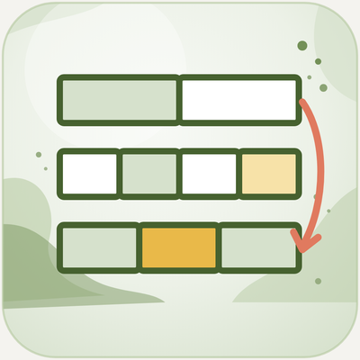

Så tänker du
- Läs hela uppgiftenVem eller vad handlar uppgiften om?
- Rita blocketEtt block för det hela, eller för den som har minst. Rita de andra utifrån det.
- Läs en gång tillSkriv in det du vet: talen och delarna som står i texten.
- Vad söker vi?Skriv ett ? där svaret ska stå.
- Hur delar vi blocket?Dela i lika stora delar. Är bråket eller procenten svår att visa? Dela i mindre delar.
- Är det något som stör?En liten extra del, en rabatt eller något som flyttas. Ta bort det och ändra talet.
- Hur mycket är en del?Dela talet du vet med antalet delar. Räkna sedan ut det du söker.
- Svara och kontrolleraSvara med en hel mening. Är svaret rimligt?

Genomgångar
15 genomgångar med blandade uppgifter som vi löser tillsammans, steg för steg. Tre uppgifter i varje: uppgift 1, 2 och 3.
Öva fritt
Nya uppgifter med nya tal och namn varje gång. Lös dem steg för steg.